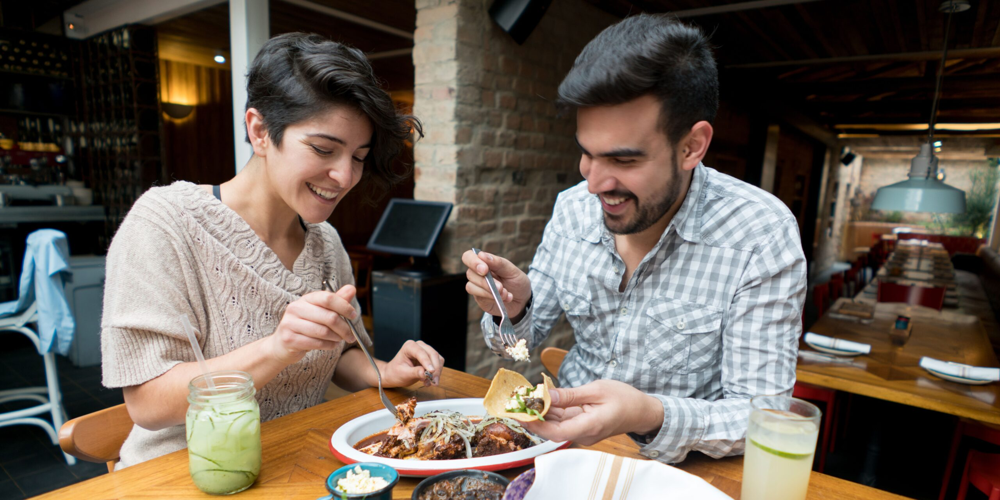

Votre destination en ligne pour découvrir et savourer l'authentique cuisine mexicaine ! Plongez dans un monde de saveurs vibrantes, de textures exquises et d'arômes envoûtants qui capturent l'essence même de la culture culinaire mexicaine.
La Saveur Mexicaine !
Entrez dans notre univers gastronomique où chaque plat raconte une histoire, où chaque bouchée évoque une tradition séculaire. Que vous soyez un amateur de cuisine ou un chef chevronné à la recherche de nouvelles inspirations, notre site regorge de recettes alléchantes, allant des classiques intemporels aux créations innovantes.
Découvrer les Entrées !
Commencez votre voyage culinaire avec nos entrées délicieusement épicées telles que les guacamoles fraîchement préparés, les ceviches rafraîchissants ou les tamales traditionnels, qui éveilleront vos papilles dès la première bouchée.

Découvrer les Plats !
Pour le plat principal, explorez notre sélection diversifiée de plats emblématiques tels que les tacos savoureux garnis de viandes grillées, les enchiladas généreusement nappées de sauce maison ou les succulents tamales farcis de délicieux ingrédients, tous imprégnés de l'essence authentique de la cuisine mexicaine.
Découvrer les Desserts !
Et pour couronner votre repas avec une touche sucrée, ne manquez pas nos desserts exquis comme les churros croustillants trempés dans du chocolat chaud, les flans onctueux parfumés à la vanille ou les délices fruités comme les paletas glacées.